Archify：AI代码仓库架构可视化开源Skill
Archify：AI代码仓库架构可视化开源Skill
来源：网页 归档日期：2026-09-10 抓取状态：成功 原文字符：33735｜配图：37 张
摘要速览
- Archify 把代码库或系统描述变成精致的可交互系统图（HTML/SVG），支持架构、工作流、时序、数据流、生命周期五类图
- 机制：Agent 产出类型化 JSON IR，Archify 确定性编译为自包含 HTML——图不会被模型"编造拓扑"，可校验、可信任
- 支持架构变更评审（Before/Delta/After 快照对比）、源码证据绑定（跳到具体文件行号）、PNG/SVG/WebM/分享卡导出
核心内容
- 定位：Node.js 渲染与校验系统，面向 Cursor / Claude Code / Codex CLI / OpenCode 等 Agent；无仓库也能用——直接描述系统即可生成图
- 安装：
npx skills add tt-a1i/archify -g，agent switcher 覆盖 cursor/codex/claude-code/opencode - 五类图对应场景：架构（组件/边界）、工作流（CI/CD/审批）、时序（API 调用）、数据流（血缘/PII）、生命周期（状态机/重试）
- 可信设计：typed JSON IR + 确定性检查产出验证回执；架构 Delta 对比给出机器可读 receipt，不推断影响或风险
- 当前版本 v2.17，内置品牌标识、暗/亮主题、有限动画、Proof Lab（11 个检查过的场景）
可执行启发
- 风控/数据平台架构评审时用 Archify 出交互图，替代手工画板；变更对比用 Delta 快照
- 注意原文章引用的 dragonHuge/archify 是 404 失效链接，正确仓库为 tt-a1i/archify
归属：[[02-输入/按主题/工具与技术/_index|工具与技术]]
我的想法
（待补充）
原文沉淀
目录
- Navigation Menu
- 7k
- Latest commit
- History
- Folders and files
- Repository files navigation
- 简体中文
- See Archify in action
- Install, then describe your idea
- ❤️ Sponsors
- Show what matters
- Understand a real repository
- Download it. Open it. Explore it.
- Community and recognition
- Preview
- Quick start
- 1. Install
- 3. Refine in chat
- Choose the right diagram
- Architecture
- Workflow
- Sequence
- Data Flow
- Lifecycle
- Why Archify
- Extend it your way Share the result
- How it works
- Generate
- Validate
- Preview (optional)
- Deliver
- Iterate
- Explore and share the output
- Installation options
- Claude Code
- Codex CLI
- opencode
- Claude.ai
- Project Knowledge
- DeepSeek Harness
- Reference and scope
- Community
- License
- Contributing
- Star History
- About
- Topics
- Resources
- Security policy
- Stars
- Watchers
- Forks
- Releases
- Packages
- Contributors
- Languages
- Footer
- Footer navigation
Skip to content
Navigation Menu
Sign inAppearance settings
-
- AI CODE CREATION
- DEVELOPER WORKFLOWS
- APPLICATION SECURITY
- EXPLORE
-
- BY COMPANY SIZE
- BY USE CASE
- BY INDUSTRY
-
- EXPLORE BY TOPIC
- EXPLORE BY TYPE
- SUPPORT & SERVICES
-
- COMMUNITY
- PROGRAMS
- REPOSITORIES
-
- ENTERPRISE SOLUTIONS
- AVAILABLE ADD-ONS
Sign in
Sign upAppearance settings
You signed in with another tab or window. Reload to refresh your session. You signed out in another tab or window. Reload to refresh your session. You switched accounts on another tab or window. Reload to refresh your session.
Dismiss alert
{{ message }}
tt-a1i
/ ** archify **
Public
- Notifications You must be signed in to change notification settings
- Fork
7k
-
Star 70.5k
-
Code
-
Issues 95
-
Pull requests 63
-
Discussions
-
Actions
-
Projects
-
Security and quality 0
-
Insights
Additional navigation options
-
Code
-
Issues
-
Pull requests
-
Discussions
-
Actions
-
Projects
-
Security and quality
-
Insights
BranchesTags
Open more actions menu
Latest commit
History
271 Commits
271 Commits
Folders and files
NameNameLast commit message
Last commit date
.agents/skills/archify-review
.agents/skills/archify-review
.github
.github
archify
archify
benchmarks/ordinary-model-floor
benchmarks/ordinary-model-floor
docs
docs
examples
examples
experiments
experiments
generated
generated
integrations/deepseek-harness
integrations/deepseek-harness
scripts
scripts
viewer
viewer
website
website
.coderabbit.yaml
.coderabbit.yaml
.gitattributes
.gitattributes
.gitignore
.gitignore
CHANGELOG.md
CHANGELOG.md
CONTRIBUTING.md
CONTRIBUTING.md
DESIGN.md
DESIGN.md
LICENSE
LICENSE
PRODUCT.md
PRODUCT.md
README.md
README.md
README_EN.md
README_EN.md
README_ZH.md
README_ZH.md
REVIEWING.md
REVIEWING.md
ROADMAP.md
ROADMAP.md
SECURITY.md
SECURITY.md
THIRD_PARTY_NOTICES.md
THIRD_PARTY_NOTICES.md
archify.zip
archify.zip
Repository files navigation
-
- README
- Contributing
- MIT license
- Security
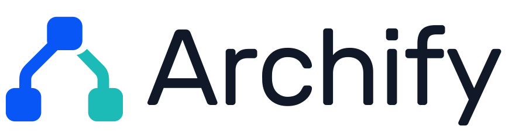
Turn anything you want to understand, plan, or share into an interactive visual.
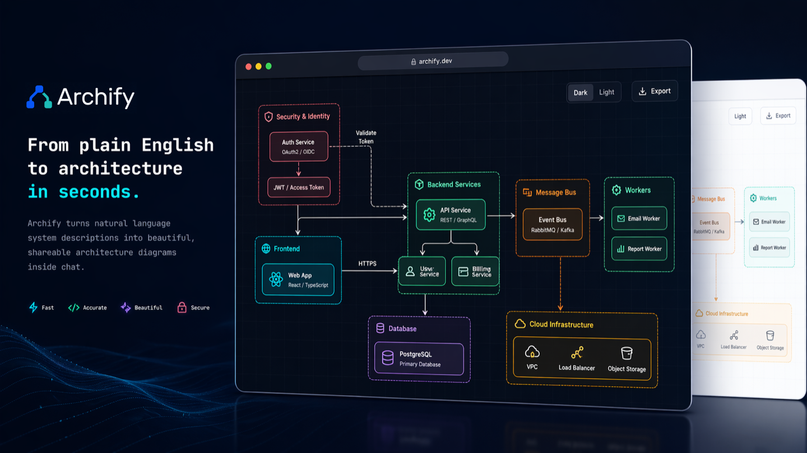
Start with an idea, a question, or a plan. Describe it to your AI agent, and Archify turns it into an interactive HTML you can explore, customize, and share. From travel itineraries and learning maps to complex systems—make it your own.
See what the community is creating—and imagine what you could make next.
Live demos · Get started · Scenario guide · Community ·
简体中文
[
](https://trendshift.io/repositories/31352?utm_source=repository-badge&utm_medium=badge&utm_campaign=badge-repository-31352)
[
](https://github.com/tt-a1i/archify/stargazers)
[
](https://tt-a1i.github.io/archify/) [
](https://discord.gg/6xWMjgCeUq)
[
](https://x.com/t20000622yy)
❤️ Partners & sponsors: Kimi Work · Supercode · EverMind/Raven
See Archify in action
[
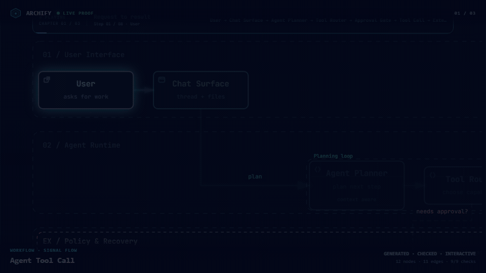
](https://tt-a1i.github.io/archify/gallery.html)
Three real generated artifacts. Signal Flow · Blueprint · Classic · open the interactive Proof Lab ↗
Click the preview to open real interactive artifacts. The GIF shows the motion; the HTML lets you explore it yourself.
Install, then describe your idea
Works with Cursor, Claude Code, Codex CLI, and OpenCode. See installation options below for additional integrations.
npx skills add tt-a1i/archify -gSend this to your agent:
Use Archify to diagram a web request: Browser calls the API,
the API checks Redis, and a cache miss queries PostgreSQL and fills the cache.
Then continue: “Add authentication”, “Highlight the cache-miss path”, or “Switch to the light theme”.
No repository is required: start with a description, or ask your agent to read a repository for a source-backed architecture diagram.
Choose your agent · Installation details and update checks
❤️ Sponsors
[
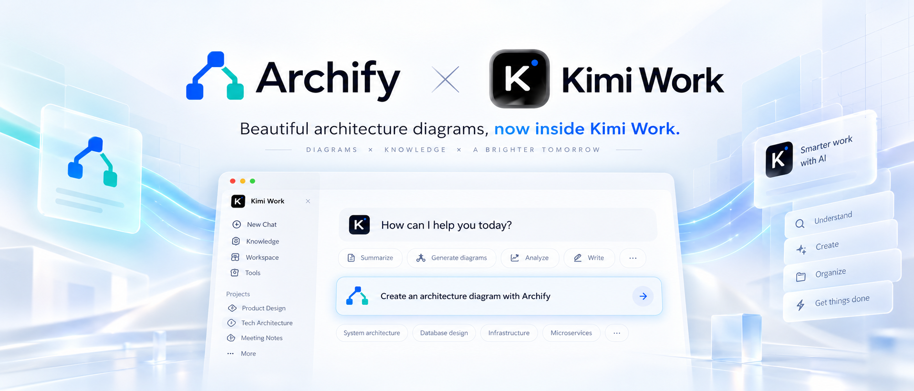
](https://www.kimi.ai/?aff=archify)
Archify × Kimi Work. Find Archify in the Kimi Work plugin store as Interactive Architecture Diagram. Describe your system in one sentence to create an interactive diagram. Try it in Kimi Work →
[
](https://supercode.sh/?utm_source=archify)
supercode.sh
Supercode sponsors Archify and enhances Codex and Cursor with token optimization, curated Skills, and spec-driven development. Archify is featured as a Supercode Editor’s Choice skill.
[
](https://supercode.sh/en/skills/tt-a1i/archify/archify)
[
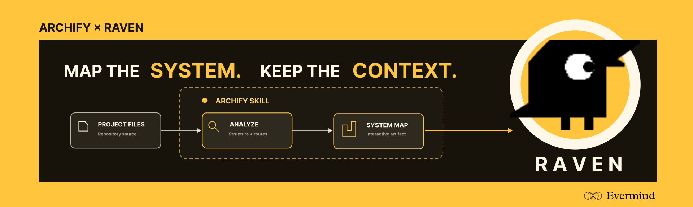
](https://github.com/EverMind-AI/Raven) EverMind · RavenEverMind sponsors Archify and builds memory infrastructure for agents. Its Raven harness supports Archify as a Skill for verified, interactive system maps.
Want to sponsor Archify? Contact us by email.
Show what matters
Explain an agent workflow Follow a cache miss Explore service relationships
[
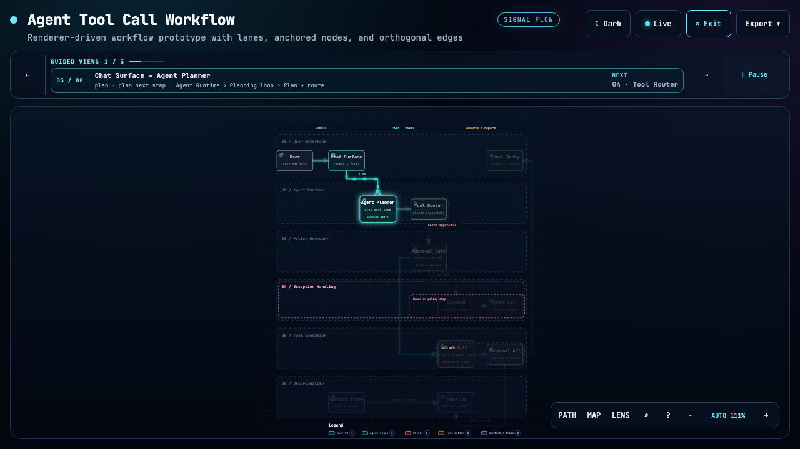
](https://tt-a1i.github.io/archify/gallery/artifacts/agent-tool-call.workflow.html?theme=dark&present=1&play=1#view=happy-path) [
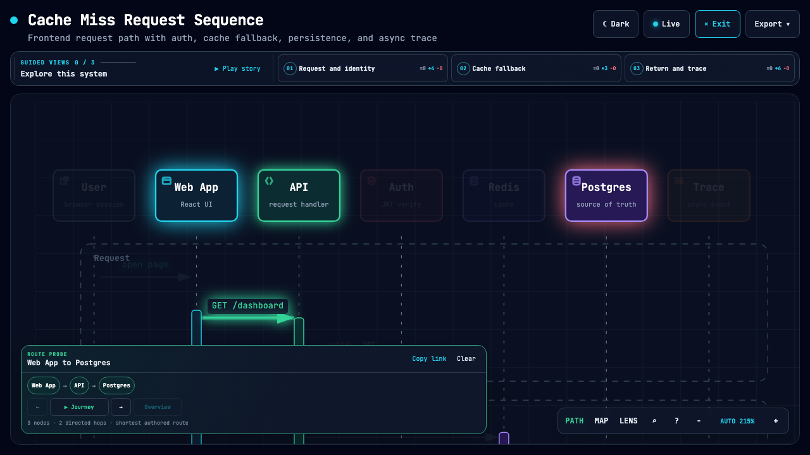
](https://tt-a1i.github.io/archify/gallery/artifacts/cache-miss.sequence.html?theme=dark&present=1#route=web~db) [
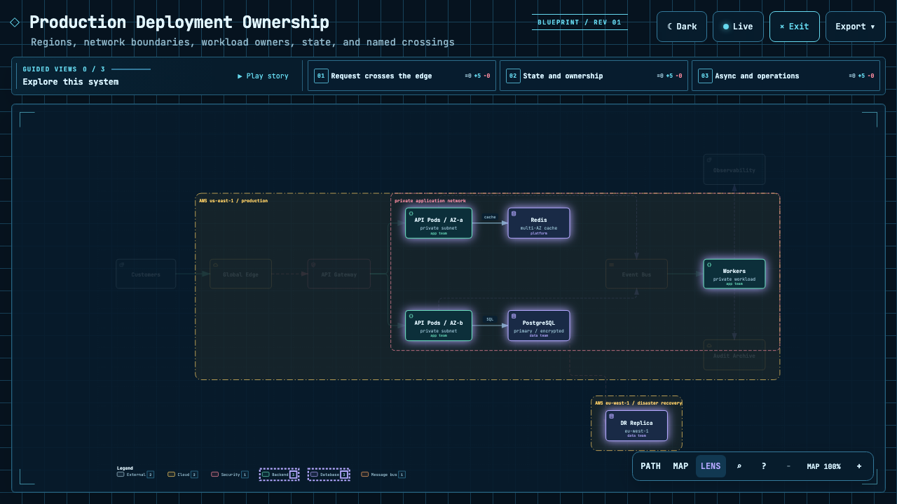
](https://tt-a1i.github.io/archify/gallery/artifacts/production-deployment.architecture.html?theme=dark&present=1#lens=backend~database)
Walk through the steps defined in the diagram. Highlight the path from web app to database. Focus on authored backend and database connections.
The Proof Lab contains all 11 checked-in scenarios, their JSON sources, named views, and validation receipts.
Understand a real repository
CODE → DIAGRAM · A source-backed system map
[
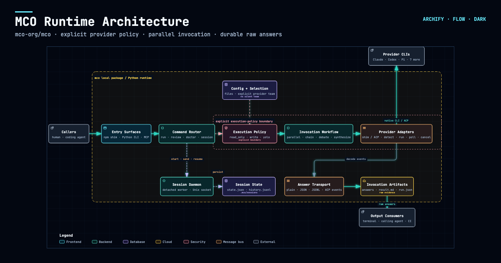
](https://tt-a1i.github.io/archify/cases/mco-runtime.architecture.html?theme=dark&present=1#view=dispatch-path)
Archify traced mco-org/mco at 9f1a1cf and produced this checked map. Open it ↗ · trace reach ↗ · typed source
Easy to extend. More ways to make it yours.
COMMUNITY STORIES · Selected examples shared by users
Keep building after the diagram is generated. Archify is open source and its output is standalone HTML. Ask your agent to adapt it, connect useful links, or add interactions for your own workflow. Community creations already span team collaboration, travel planning, legal citation checks, contract review, and incident retrospectives. These are just a few examples.
One user started with a hand-drawn multi-agent architecture, turned it into an interactive diagram, then added a Kimi execution pool through conversation. Others asked their agent to read a project and brought the resulting architecture into Feishu or DingTalk for team discussion.
Another user turned a Shanghai CityWalk guide into a four-day itinerary: switch between days, inspect a stop, and jump to Amap, Xiaohongshu, or Dianping. The author also added arrival check-ins and stop notes, turning the itinerary into a small tool to use during the trip. These extensions were added by the community author for this particular artifact.
▶ Explore the interactive Shanghai CityWalk
[
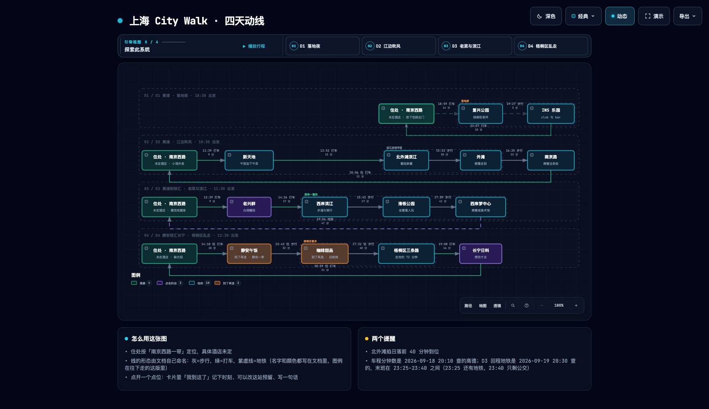
](https://tt-a1i.github.io/archify/cases/community/shanghai-citywalk.html)
▶ Try the interactive version · Switch between D1–D4 and click a place to explore.
Community artifact · Shanghai CityWalk · Four days of routes and place links
Download it. Open it. Explore it.
The output is a self-contained HTML file. Download it and open it in your browser to use the node details, path exploration, and guided chapters included in that artifact. No Archify installation is needed to view it. Send the HTML to someone else and the interactions go with it; external websites and map links need a network connection.
Explore the Shanghai CityWalk ↗ · Download HTML ↓
Try switching between D1–D4, opening a place card, or following a map link. Times and place information reflect the author's original itinerary.
Community and recognition
- #1 on GitHub Trending's weekly, all-language repository list. Ranking screenshot published by the creator on September 1, 2026, with all languages and “This week” selected.
- Featured and interviewed by QbitAI. Project feature · The developer's story.
- Shared with developer communities. midudev's post.
A selection of public coverage, community shares, and historical milestones. Follow the links for dates and sources.
Preview
Themes, exports, and share cards
Same diagram, two themes, one click to switch:
Dark Light
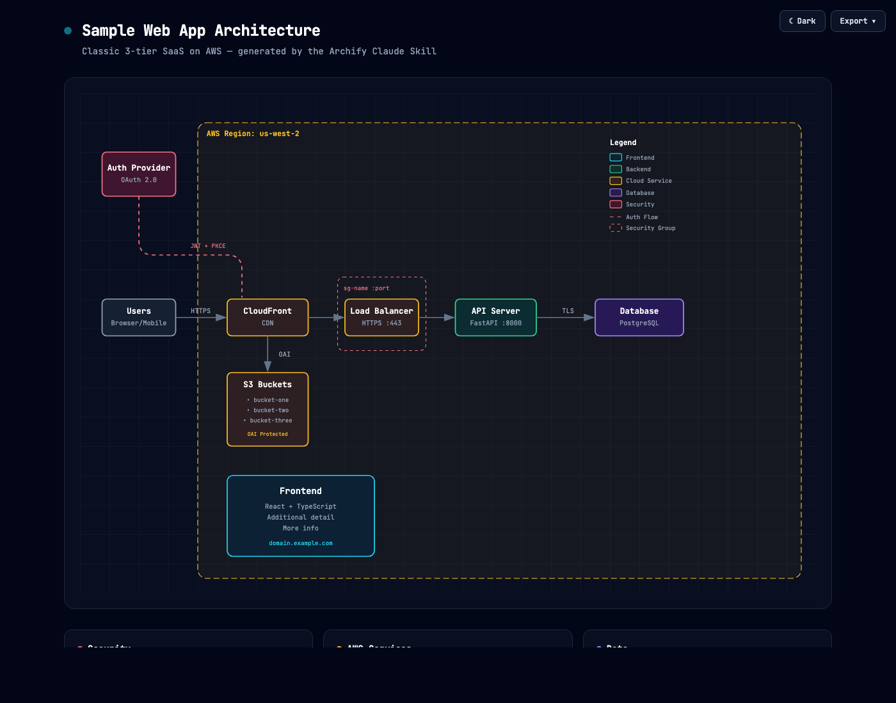
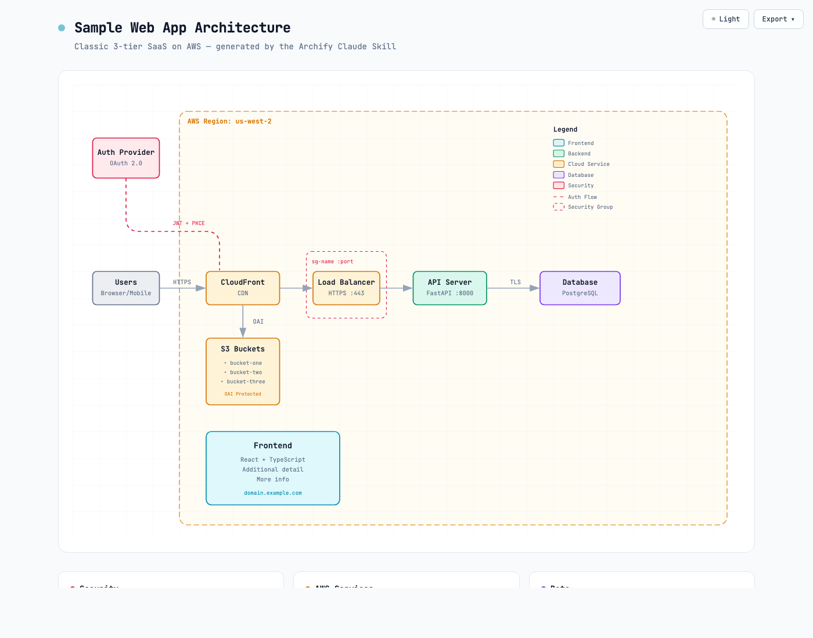
The Export menu copies PNG to the clipboard and downloads static or motion formats:
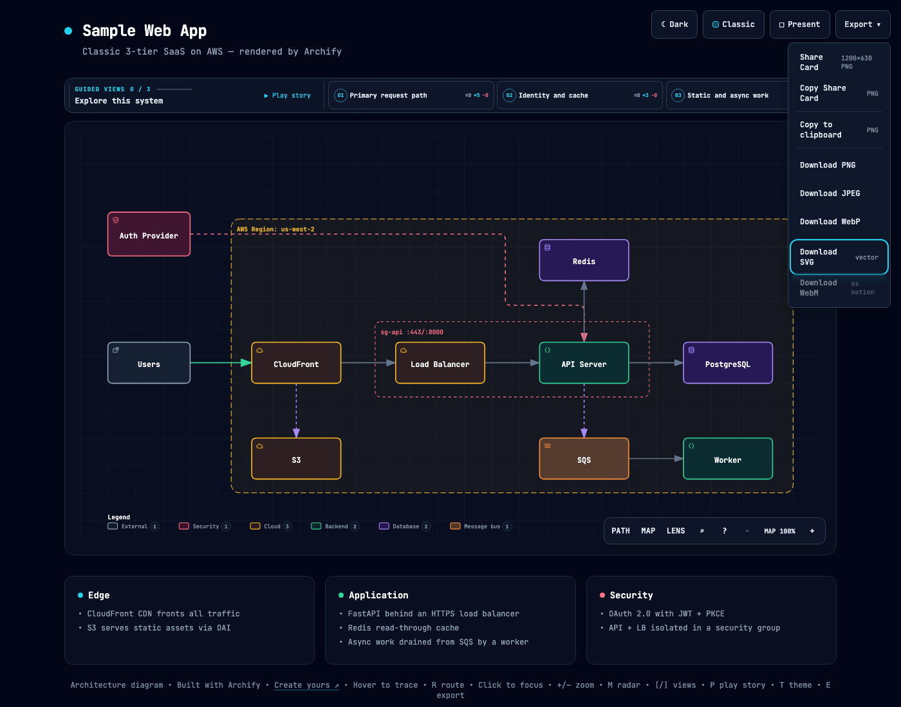
Use Copy Share Card when you want a canonical 1200×630 image for a README, release, or social post.
After tracing a route, Export → Route Share Card downloads that authored path as a 1200×630 PNG with the full diagram retained for context.
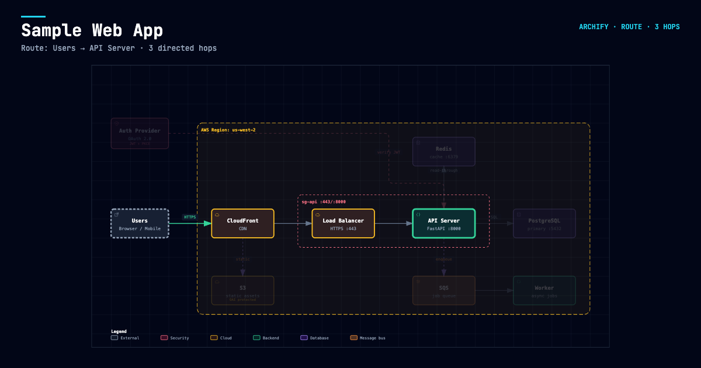
After tracing authored Upstream or Downstream reach, Export → Reach Share Card captures that exact reading without claiming runtime impact.
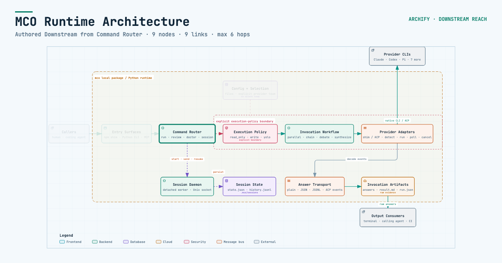
Open examples/web-app.html locally to try the complete viewer.
Quick start
Current development version: v2.17.0-dev.1. See Changelog.
1. Install
npx skills add tt-a1i/archify -gMore installation options and update-check details
For an explicit, non-interactive Cursor install:
npx -y skills add tt-a1i/archify --skill archify --agent cursor --global --copy --yesTo try without installing:
npx skills use tt-a1i/archify@archify --agent codexDSH community opt-in: dsh plugin --profile web add @tt-a1i/archify-dsh@0.1.0
The agent switcher covers cursor, codex, claude-code, and opencode.
Archify may GET the fixed stable manifest solely to show an optional reminder; it never downloads or installs updates. Successful checks wait about 72 hours (±20%); active use retries failures after 6, then 24 hours. The server sees normal HTTP metadata (IP and time), but receives no version, Agent, project data, prompts, account/device ID, or ETag. You decide whether and when to update. Set ARCHIFY_UPDATE_CHECK_DISABLED=1 to disable networking and reminder-state writes.
2. Start from a description — no repository required
Use Archify to draw: Browser -> API -> Redis cache -> PostgreSQL fallback.
For source evidence, open a repository and ask:
Analyze this repository, then use archify to create a high-level runtime architecture diagram.
Show 8–12 core components, one primary path, external dependencies, and trust boundaries.
Put supporting detail in cards instead of adding more edges.
3. Refine in chat
Continue with focused requests such as add Redis, move auth to the left, or highlight the rollback path. Archify keeps the typed source available for targeted iteration.
Choose the right diagram
Five diagram types, architecture comparisons, and examples
Type Best for Include in your prompt
Architecture
Components, services, storage, boundaries Scope, core components, primary path
Workflow
CI/CD, approvals, tool calls, runbooks Participants, order, branches, exceptions
Sequence
API calls, cache fallback, auth, async traces Callers, callees, returns, timing
Data Flow
Pipelines, lineage, PII, consumers Sources, transforms, stores, boundaries
Lifecycle
States, retries, waits, terminal outcomes States, events, retry and cancellation paths
Architecture's optional deployment-ownership profile fails closed when authored owners, region placement, private database scope, or named crossings are missing; it is never implicit and does not inspect live infrastructure. See the checked deployment proof.
For design or PR review, Architecture Delta compares validated Before / Delta / After snapshots with a machine receipt. Select an authored change or play one finite, viewer-only Review; it infers no impact, risk, or merge safety.
node archify/bin/archify.mjs compare architecture base.json head.json architecture-delta.html --json
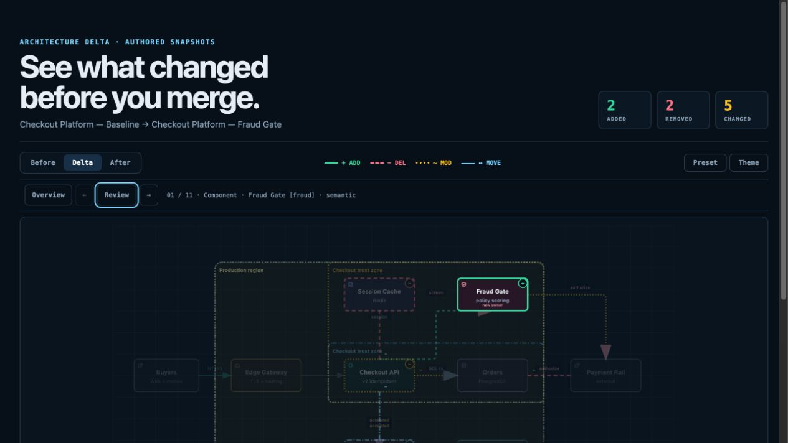
Not sure which one fits? Use the interactive scenario guide, or ask the zero-dependency CLI:
node archify/bin/archify.mjs guide "Show an API request with Redis cache miss"
node archify/bin/archify.mjs guide "Map Kafka topics, consumer groups, replay, and DLQ" --jsonWorkflow keeps the happy path clear across lanes:
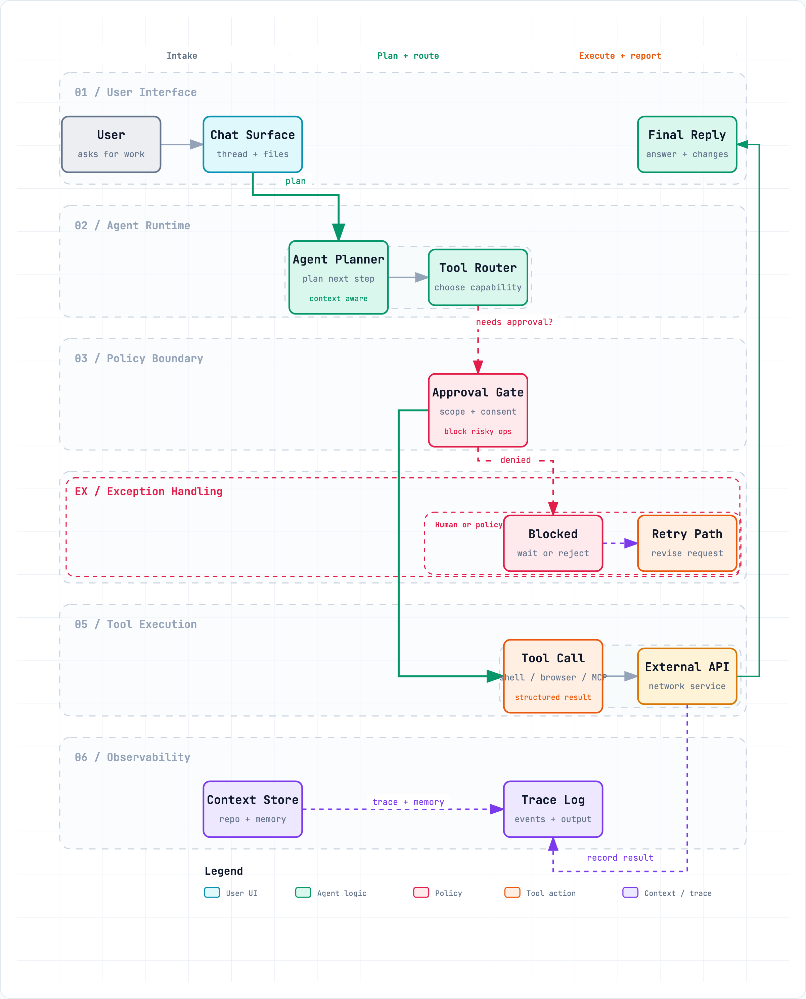
Sequence explains one interaction over time:
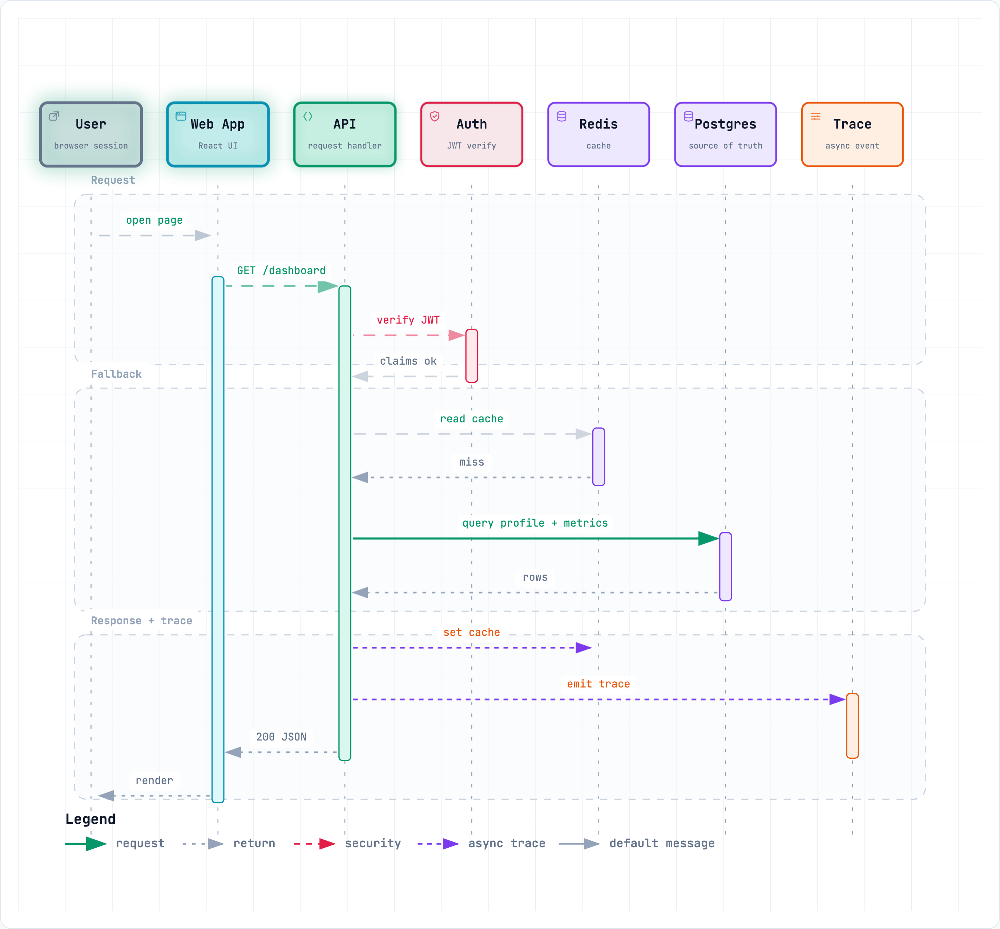
Data Flow makes movement and sensitivity boundaries explicit:
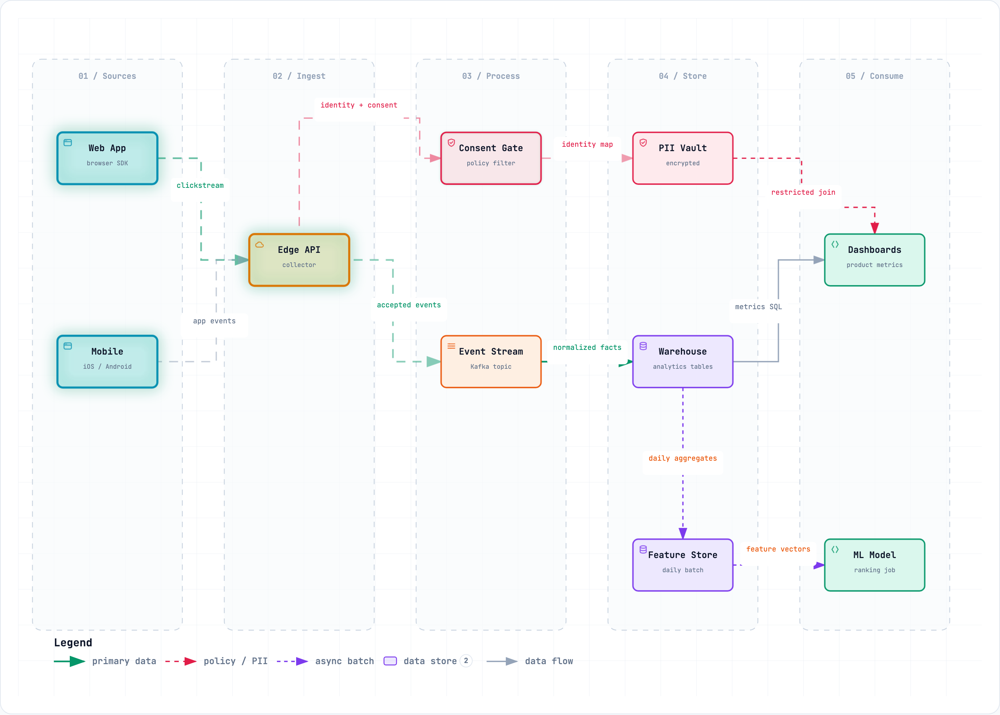
Lifecycle separates progress, waits, retries, and terminal outcomes:
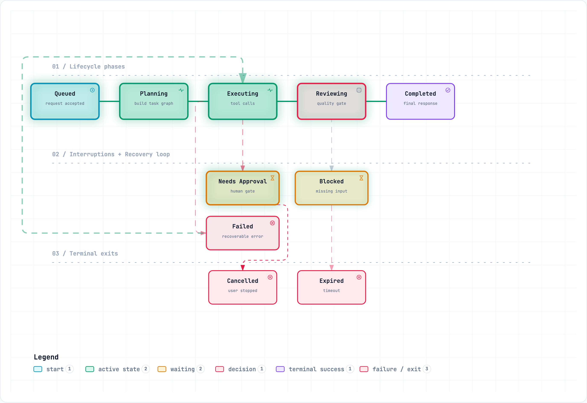
Architecture examples: web-app · Archify pipeline · grid placement · desktop agent
Why Archify
Understand the structure Walk through the story
Map components, workflows, and relationships from code or a description. Explore nodes, follow paths, and explain a process chapter by chapter.
Extend it your way Share the result
Keep an editable source and build on the open-source code or generated HTML with your own interactions and use cases. Share a self-contained HTML file or export images, video, and share cards.
The engineering behind the experience
- Layout judgment over generic auto-layout — the agent chooses hierarchy, spacing, routes, and emphasis; shared automatic endpoints spread deterministically instead of piling arrows on one midpoint.
- Typed JSON IR — every renderer-backed mode has a schema and reproducible source.
- Atomic validation before delivery — schema, layout, HTML/SVG, route, and label-to-route clearance checks must all pass before a showcase artifact replaces the last known good output.
- Failures come with a repair receipt —
validate --jsonanddeliver --jsonreturn stable rule codes, the exact subject, measured evidence, and only supported repair controls instead of a Node stack or an unstructured retry guess.
- Last-good live preview — an optional desktop loop watches one JSON file, refreshes only after the latest candidate passes every gate, and keeps the previous verified diagram visible when a save is incomplete or invalid.
- Truthful interaction — focus, upstream/downstream reach, exact routes, role comparison, and stories reuse authored nodes and relationships instead of inventing topology or claiming runtime impact.
- Source evidence, only when requested — Evidence-backed Architecture nodes mark themselves
SRC nand open Git-verified files and line ranges pinned to one public commit; ordinary artifacts stay source-free.
- Portable by default — the result is one HTML file; exports remain full-diagram and free of temporary viewer state.
Archify is not a general-purpose drawing editor or a Mermaid theme. It turns technical intent into a communication artifact.
How it works
Generation, validation, preview, and delivery details
Step What happens
Generate
The agent creates typed JSON IR from your description.
Validate
Bundled validators and layout rules check the source; failures identify the exact local repair in machine-readable JSON.
Preview (optional)
A loopback-only desktop session watches one source and reloads only verified revisions; failures keep the last-good artifact.
Deliver
A same-directory candidate is rendered and checked; only a passing artifact atomically replaces the target, then optional --open launches that exact file.
Iterate
The agent updates the source while unrelated structure stays stable.
Useful repository commands:
cd archify
node bin/archify.mjs doctor
node bin/archify.mjs demo /tmp/archify-demo
node bin/archify.mjs guide "Show CI/CD checks, approval, deploy, and rollback"
node bin/archify.mjs validate workflow examples/agent-tool-call.workflow.json --quality showcase --json
node bin/archify.mjs preview workflow examples/agent-tool-call.workflow.json /tmp/workflow.html --quality showcase
node bin/archify.mjs deliver workflow examples/agent-tool-call.workflow.json /tmp/workflow.html --quality showcase --open --jsonpreview is an explicit loopback-only desktop mode: it watches one JSON file on a random 127.0.0.1 port, keeps the last verified output through failures, stops with Ctrl-C, and adds no generated-HTML runtime. Use --no-open for tests or manual URL opening.
deliver --open is an opt-in one-shot handoff after commit. Opener failure preserves success; JSON remains on stdout and the absolute fallback path goes to stderr.
On failure, validate --json and deliver --json emit one JSON object. Apply only each diagnostics[] subject's supportedFixes, within the Skill's two correction rounds; visual review remains separate.
Settings:
{
"meta": {
"locale": "en",
"animation": "trace",
"visual_preset": "signal-flow"
}
}meta.locale=en|zh-CN localizes page title, Legend, states/errors, a11y, HTML/SVG lang—never authored content. Otherwise omit; preserve requested-language copy; disclose English fallback. Static omits animation; classic defaults.
Explore and share the output
Action Control
Open the factual Diagram Guide ?
Find and focus a semantic node /
Trace upstream/downstream authored reach Focus a node → Upstream / Downstream
Probe a directed route and inspect its journey R or PATH
Compare one or two semantic roles L or LENS
Open the live overview radar M or MAP
Play a guided story / change chapter P / [ ]
Enter Presentation Stage F
Choose visual style (S cycles) / toggle theme / open Export S / T / E
Zoom or reset + / - / 0
Stable links can restore #focus=<id>, #focus=<id>&reach=upstream|downstream, #relation=<id>, #route=<source>~<target>, #lens=<kind>~<kind>, and #view=<view-id>. Reader-driven motion is finite, respects prefers-reduced-motion, and never enters canonical exports.
The complete generation and viewer contract lives in archify/SKILL.md.
Installation options
Surface Install location or method Capability
Claude Code
~/.claude/skills/ or .claude/skills/ Full renderer + validation workflow
Codex CLI
~/.agents/skills/ or .agents/skills/ Full renderer + validation workflow
opencode
~/.config/opencode/skills/, .opencode/skills/, or .agents/skills/ Full renderer + validation workflow
Claude.ai
Upload archify.zip under Settings → Capabilities → Skills Depends on Node.js access in the sandbox
Project Knowledge
Upload archify.zip to the project Prompt-driven architecture fallback
DeepSeek Harness
Opt-in: dsh plugin --profile web add @tt-a1i/archify-dsh@0.1.0. Invoke: Use the archify skill to map this repository's runtime architecture. Remove: dsh plugin --profile web remove @tt-a1i/archify-dsh. Community integration for developer-preview @deepseek-ai/dsh@0.1.0-rc.6; Node ^22.19.0 || >=24.0.0; not an official DeepSeek product. No telemetry. Shell files need exact workspace paths, not Web Produced Files. Details.
Reference and scope
- Schema reference · Skill · Examples · Agent cookbook
- Changelog
- Roadmap
Automatic Mermaid parsing, general-purpose auto-layout, hosted sharing, and WYSIWYG editing are intentionally outside the current scope.
Community
👋 Welcome to the Archify Community!
Connect with other users and developers, share ideas, request features, report bugs, discuss development, and help make Archify better together.
-
-
WeChat: scan the QR code below. WeChat group codes expire periodically; if this one has expired, ask for the current code through Discord or QQ.
-
QQ group: 1121948602
**
WeChat**
**
QQ**

License
MIT — free to use, modify, and distribute.
Contributing
Issues, pull requests, and real-world diagrams are welcome. Start with the contribution guide, use the reproducible bug form for failures, or submit a validated diagram through the community showcase form. · LINUX DO
Star History
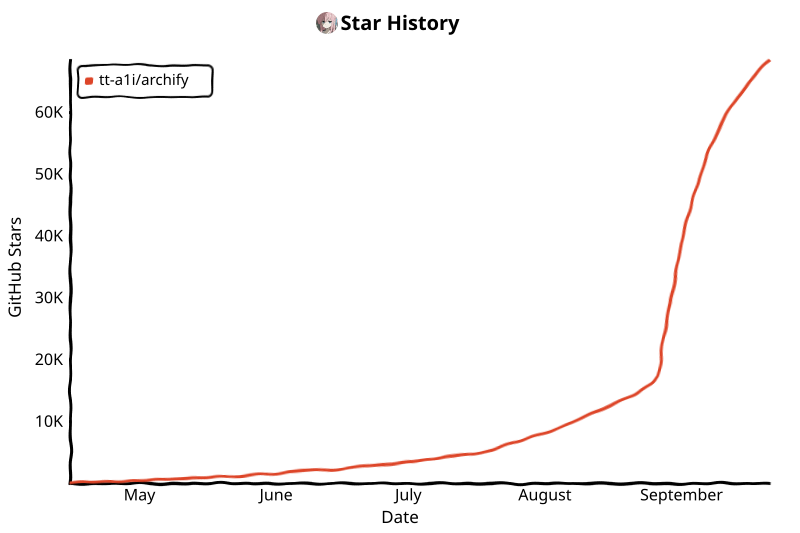
About
Agent skill for beautiful, verifiable architecture, workflow, sequence, data-flow, and lifecycle diagrams—self-contained HTML with motion and crisp export.
Topics
agent-skillsarchitecture-as-codearchitecture-diagramclaude-skillcode-visualizationcodexcoding-agentsdata-flow-diagramdeepseek-harnessdeveloper-toolsdiagram-as-codediagramsdiagrams-as-codedsh-pluginmermaid-alternativeopencodesequence-diagramsoftware-architecturesystem-designtext-to-diagram
Resources
Readme
MIT license
Contributing
Contributing
Security policy
Security policy
Activity
Stars
70.5k stars
Watchers
204 watching
Forks
4.7k forks
Report repository
Releases
Packages
Contributors
Languages
Footer
[
](https://github.com)
© 2026 GitHub, Inc.
Footer navigation
- Terms
- Privacy
- Security
- Status
- Docs
- Contact
-
-
You can’t perform that action at this time.
归属：[[02-输入/按主题/工具与技术/_index|工具与技术]]